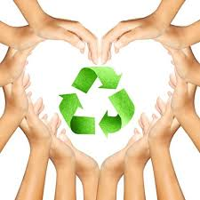

La historia del Día Mundial de la Tierra.
El origen de este día, celebrado mundialmente (aunque no en todas partes), se encuentra en Estados Unidos, durante los 70. Y está asociado, sin duda, a un nombre: Gaylord Nelson. La historia cuenta (a pesar de los curiosos rumores sobre Lenin) que fue este político quién aprovechó un miércoles para organizar una manifestación en defensa del medio ambiente y el ecologismo. Un momento muy estudiado y que venía cociéndose desde la década de los 60 debido a la creciente irresponsabilidad ambiental del gobierno de Estados Unidos. Ya habían gérmenes plantados desde la comunidad científica y estudiantil. Ese miércoles los estudiantes y trabajadores se unieron en una manifestación pacífica que pretendía rendir homenaje y mostrar la preocupación colectiva sobre temas como el medio ambiente, la superpoblación o la conservación de la biodiversidad... Y fue todo un éxito. Debido a la participación de dos mil universidades, diez mil escuelas y centenares de comunidades, el gobierno Estadounidense decidió crear Agencia de Protección Ambiental. Este solo fue el comienzo. Durante el 72, la cumbre de la Tierra, en Estocolmo, puso de manifiesto la manifiesta necesidad de una ley medioambiental internacional más comprometida. En los noventa, la celebración del Día de la Tierra ya estaba mucho más generalizada fuera de Estados Unidos y a día de hoy se celebra a nivel mundial. Es más, la plataforma Día de la Tierra trata de promover la concienciación medio ambiental mientras que numerosos colectivos y entidades participan a su manera. Por ejemplo, Google promueve el día con un doodle y una actividad especial mientras que en empresas como Apple, bastante comprometidas con el medio ambiente, aprovechan este día para mostrar su informe de compromiso medioambiental. Gracias a iniciativas como esta, el mundo ha ido tomando una concienciación medioambiental que antes de los 70 era completamente inexistente o muy vaga. Gracias a esto hemos puesto remedio y frenado algunos de los problemas más acuciantes.
“Primero, fue necesario civilizar al hombre en su relación con el hombre. Ahora, es necesario civilizar al hombre en su relación con la naturaleza y los animales” Víctor Hugo
“Salvaguardar el ambiente…es un principio rector de todo nuestro trabajo en el apoyo del desarrollo sostenible; es un componente esencial en la erradicación de la pobreza y uno de los cimientos de la paz” Kofi Annan
“Cada edición dominical del New York Times consume una cantidad de papel fabricada con 200 hectáreas de bosque” Gabriel García Márquez
"La tierra esta viva no la destruyas."
"Primero fue la tierra después el hombre, porque destruimos a nuestra creadora."
"Mientras la naturaleza grita y llora, el género humano esta sordo y sin alma."
"Corta un árbol y conviértelo en fuego y podrá arder; pero ya no producirá flores ni frutos."
"La mejor herencia que podemos dejarle a nuestros hijos es un mundo mejor."
"Solo debería existir Amor, Conocimiento y un Planeta en el que podamos Vivir Sanamente."
"El planeta tierra tiene vida, no seamos sus verdugos."
"Para la tierra poder salvar, curemos sus heridas y dejemos de contaminar."
"Si no eres capaz de respetar a la tierra atente a las consecuencias."
"El planeta es hermoso, pero tiene un gran defecto llamado hombre."
"El mundo es la suma total de nuestras posibilidades vitales."
La diversidad biológica, o biodiversidad, es el término por elque se hace referencia a la amplia variedad de seres vivos sobre la Tierra y los patrones naturales que conforma. La diversidad biológica que observamos hoy es el fruto de miles de millones de años de evolución, moldeada por procesos naturales y, cada vez más, por la influencia del ser humano. Esta diversidad forma la red vital de la cual somos parte integrante y de la cual tanto dependemos.
Con frecuencia, se entiende por diversidad la amplia variedad de plantas, animales y microorganismos existentes. Hasta la fecha, se han identificado unos 1,75 millones de especies, en su mayor parte criaturas pequeñas, por ejemplo, insectos. Los científicos reconocen que en realidad hay cerca de 13 millones de especies, si bien las estimaciones varían entre 3 y 100 millones.
La diversidad biológica incluye también las diferencias gen”ticas dentro de cada especie, por ejemplo, entre las variedades de cultivos y las razas de ganado. Los cromosomas, los genes y el ADN, es decir, los componentes vitales, determinan la singularidad de cada individuo y de cada especie.
Otro aspecto adicional de la diversidad biológica es la variedad de ecosistemas, por ejemplo, los que se dan en los desiertos, los bosques, los humedales, las montañas, los lagos, los ríos y paisajes agrícolas. En cada ecosistema, los seres vivos, entre ellos, los seres humanos, forman una comunidad, interactúan entre sí, asi como con el aire, el agua y el suelo que les rodea.
Es esta combinación de formas de vida y sus interacciones mutuas y con el resto del entorno que ha hecho de la Tierra un lugar habitable y único para los seres humanos. La diversidad biológica ofrece un gran número de bienes y servicios que sustentan nuestra vida.


Qué es la conciencia ecológica. A partir del momento en que el hombre comenzó a apropiarse de la naturaleza para darle forma a sus necesidades y caprichos, los ecosistemas de todo el planeta dieron su respuesta ante este tipo de abusos, a través de consecuencias negativas como la contaminación y la pérdida de biodiversidad.
Hoy en día podemos conocer, a través de los medios de comunicación, todas las noticias referentes al cambio climático. Pero ante la inevitable realidad ¿cuántos de nosotros nos sentimos responsables -y actuamos en consecuencia- por los daños que estamos causando al planeta?
Justamente, tener conciencia ecológica es entender que somos dependientes de la naturaleza y responsables por su estado de conservación. Ignorar esta verdad equivale a autodestruirnos, porque al degradar el medio ambiente estamos empeorando nuestra calidad de vida y poniendo en peligro el futuro de nuestros descendientes.
Infundir respeto por el medio ambiente a las generaciones más jóvenes es una obligación moral de los mayores, de la sociedad en general, ya sea en forma de políticas como mediante la enseñanza en los colegios o con el ejemplo en su entorno más próximo. No en vano, ellos son el futuro y de esa transmisión de valores dependerá el futuro del planeta.
¿Pero, cómo hacerlo? Generar conciencia ecológica en los jóvenes va más allá de campañas puntuales que inviten a reciclar o de declaraciones en favor del medio ambiente de boca de sus ídolos. Aunque todo ayuda, en realidad sólo una educación que empiece en la más tierna infancia logrará el objetivo: que sean ciudadanos informados, con espíritu crítico, porque sólo entendiendo y amando a la naturaleza se contribuirá a su preservación.
Los primeros años son fundamentales. En el seno de la familia o en los colegios es donde se socializa al niño, el periodo en el que se desarrolla se personalidad y se le orienta para un mejor desarrollo. Los valores, los conocimientos y las actitudes que inculquen el respeto por los demás (lo que incluye la Naturaleza) se transmitirán a través de cuentos, actividades escolares y, de forma especial, a través de la convivencia familiar.
Cuida tu medio ambiente desde tu barrio o colonia.
Seguro que puedes hacer mucho por tu medio ambiente desde tu casa o la escuela, pero también en tu barrio o colonia. Te proponemos lo siguiente:

Unete con tus vecinos para limpiar los terrenos sin construcción.
Limpien los ríos que halla en la colonia.
Invita a todos en tu colonia, por medio de carteles a que cuiden el agua y vigila constantemente que la gente no la desperdicie.
Da un recorrido por tu colonia de barrio en busca de fugas de agua y reportala a la comisión del agua de tu localidad.
Si observas que hay muy pocos botes de basura en la colonia, solicita junto con algunos de tus vecinos a las autoridades, que coloquen más y realiza una campaña para que la gente deposite la basura en los botes. Aunque en México no se tiene una cultura de separar la basura, tú puedes comenzarla, enseñándoles por medio de carteles a tus vecinos.
Organizate con tus vecinos para cuidar y limpiar los parques y jardines de tu colonia.
También puedes solicitar a las autoridades de tu comunidad, árboles para sembrar.
Se amable y respetuoso con tus vecinos.
Vigila que no maltraten a los animales que hay en tu colonia.
Como puedes darte cuenta, aunque seas un niño puedes hacer muchísimo por el medio ambiente desde los lugares en donde vives y frecuentas. Muchas personas creen que ellos por ser pequeños no entienden acerca de lo importante que es cuidar el medio ambiente y mucho menos poner en práctica algunas medidas para lograrlo, sin embargo son quienes le ponen el ejemplo a los adultos, por ser más concientes, sensibles, y participativos en el cuidado de su entorno.
No dejes que el lugar en donde vives ahora y en un futuro se destruya y contamine, sigue colaborando para tener un mundo mejor y más saludable.
Aprovechemos al máximo la luz, con los cambios de horario nos ayuda también a conservar más energía.
Ahorra más agua, con acciones como lavar el auto con un balde con agua en vez de usar la manguera nos ayudará reducir su consumo.
Desconecta tus aparatos eléctricos cuando no los estés utilizando, esto ayudara a que no consuman ni una cantidad mínima de electricidad.
Elige baterías que se recarguen con energía solar.
Evita lo más que se pueda usar el auto. Viajar en bicicleta o transporte público en vez del auto te volverá una persona más sana y contribuirás a contaminar menos.
Elige bolsas de papel o tela, ya que las regulares de plástico son muy contaminantes ya que toman más tiempo para degradarse.
Planta árboles, ya sea en el jardín, en algún parque o busca sociedades civiles que estén reforestando. Todo esto ayuda a mejorar el aire de la ciudad y a nuestros pulmones.
Los desechos orgánicos pueden ser buen abono, por lo que se podrían enterrar en el suelo para que ayuden a las plantas en vez de tirarlo a la basura.
Usar productos naturales sobre las plantas en vez de pesticidas.


 1
1 4
4 5
5 6
6 8
8 9
9 10
10 11
11


 1
1 2
2 3
3 4
4 5
5 6
6 8
8 9
9 10
10 11
11